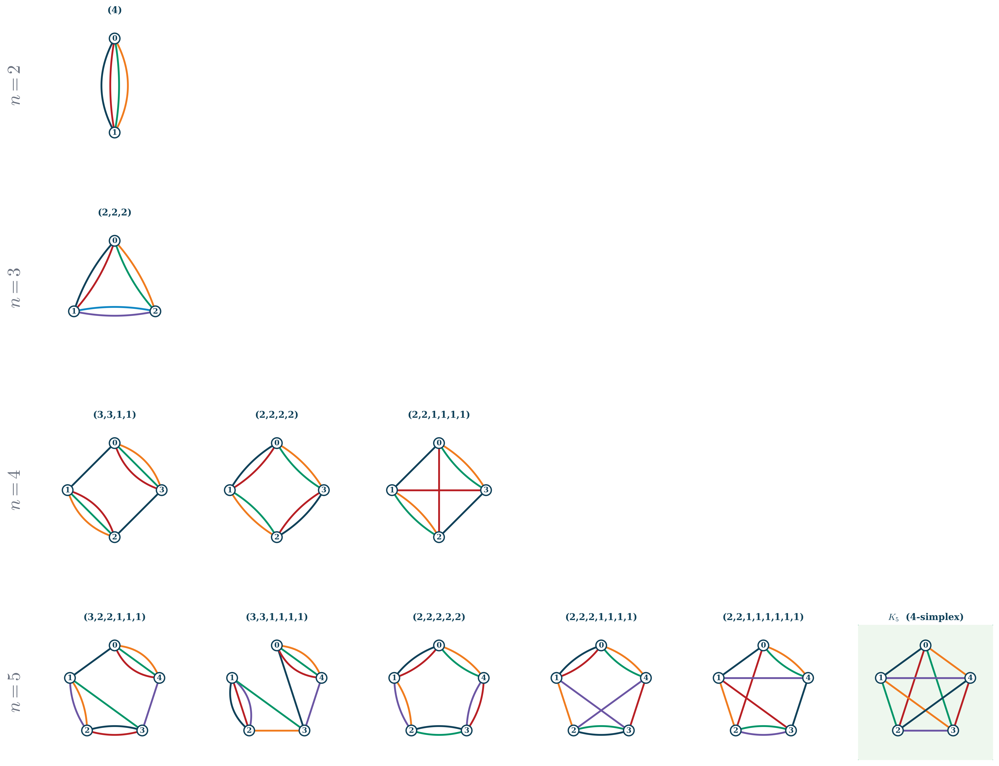

1 Pieces of the action
In the last post we wrote the fields defined over our group in terms of representations of the group. These fields included physical requirements of closure and simplicity, generating the final form of the field as
\phi(g_1, g_2, g_3, g_4) = \sum_{\{J_i\}, \iota} \phi^{J_1 J_2 J_3 J_4}_{\iota,\, m_1 m_2 m_3 m_4} \;\iota^{J_1 J_2 J_3 J_4}_{n_1 n_2 n_3 n_4} \prod_{i=1}^4 D^{J_i}_{m_i n_i}(g_i), \tag{1}
where \phi are the field components, \iota are the intertwiners that implement the closure condition, and D^J_{mn}(g) are the representation matrices of the group elements. The labels J are representation labels, and the labels m and n are the indices of the representation matrices. The field \phi(g_1, g_2, g_3, g_4) is a function of four group elements, which we can think of as being associated with the four faces of a tetrahedron.
In a previous post we also discussed the Casimir invariants of the group and their form in a given representation. It’s now time to bring these together and use the Casimir invariants to build an action for our universe.
Casimir invariants are a natural choice as building blocks to construct a group-invariant action, because they are themselves invariant under every generator of the group. So let’s start with a simple example: taking the expectation value of the Casimir invariant \mathcal{C}_2^{\mathfrak{so}(4,1)} under our group field in the standard group basis:
\langle \phi | \mathcal{C}_2^{\mathfrak{so}(4,1)} | \phi \rangle = \int \prod_{i=1}^4 dg_i \, \phi(g_1, g_2, g_3, g_4) \mathcal{C}_2^{\mathfrak{so}(4,1)} \phi(g_1, g_2, g_3, g_4). \tag{2}
This is a perfectly good group-invariant action, but it is not very useful in this form. We can rewrite it in terms of the representation basis using the Peter-Weyl transform, which will give us a much more manageable expression. The key observation is that the Casimir invariant \mathcal{C}_2^{\mathfrak{so}(4,1)} acts on the representation matrices D^J_{mn}(g) as a scalar, multiplying them by the eigenvalue of the Casimir invariant in that representation. This means that when we rewrite the action in terms of the representation basis, we will get an expression that is diagonal in the representation labels J, and that involves the eigenvalues of the Casimir invariant in those representations.
The corresponding action in the representation basis is
\langle \phi | \mathcal{C}_2^{\mathfrak{so}(4,1)} | \phi \rangle = \sum_{\{\nu_i, s_i\}, \iota} \sum_{\{m_i\}} \sum_{i=1}^{4}\left(-\nu_i^2 - s_i(s_i+1) - \frac{9}{4}\right) \left| \phi^{\nu_1 s_1 \ldots \nu_4 s_4}_{\iota,\, m_1 m_2 m_3 m_4} \right|^2
where each face i carries the two \mathrm{SO}(4,1) representation labels (\nu_i, s_i), and the Casimir eigenvalue \mathcal{c}_2^{\mathfrak{so}(4,1)} = -\nu^2 - s(s+1) - \frac{9}{4} follows from the general formula for the representation (\nu, s). The sum over i accounts for the Casimir acting independently on each of the four group arguments of the field. The m_i are the matrix indices of the representation, summed over all states within each representation. Under \mathrm{SO}(4) \cong \mathrm{SU}(2)^+ \times \mathrm{SU}(2)^-, representations are labelled by a pair (j^+, j^-); the simplicity constraint j^+ = j^- = j restricts m_i to run only over the diagonal \mathrm{SO}(4) sector.
1.1 Other Casimirs
The part of the action above corresponding to the invariant \mathcal{C}_2^{\mathfrak{so}(4,1)} is just part of the story. We can also include other Casimir invariants, such as \mathcal{C}_4^{\mathfrak{so}(4,1)}, \mathcal{C}_2^{\mathfrak{su}(3)}, etc: each of these gives us a different group-invariant action, and we can take linear combinations of them to build more complicated actions. We now run into a free parameter problem: what should the relative weights in the linear combination of these different Casimir invariants be?
This is a fundamental problem with the group field theory framework: the construction of the action is not determined by the framework itself, but requires input from physics. For now we will note that the part of the action second-order in the fields can be written as
\sum_{\{J_i\},\iota}\sum_{\{m_i\}} \left( \lambda_0 + \lambda_2^{\mathfrak{so}(4,1)} \mathcal{c}_2^{\mathfrak{so}(4,1)} + \lambda_4^{\mathfrak{so}(4,1)} \mathcal{c}_4^{\mathfrak{so}(4,1)} + \lambda_2^{\mathfrak{su}(3)} \mathcal{c}_2^{\mathfrak{su}(3)} + \ldots \right) \left| \phi^{J_1 J_2 J_3 J_4}_{\iota,\, m_1 m_2 m_3 m_4} \right|^2
where \lambda_2^{\mathfrak{so}(4,1)}, \lambda_4^{\mathfrak{so}(4,1)}, \lambda_2^{\mathfrak{su}(3)}, etc are the free parameters corresponding to the different Casimir invariants, and \lambda_0 is a weight corresponding to the trivial identity invariant. The \mathcal{c}_2^{\mathfrak{so}(4,1)}, \mathcal{c}_4^{\mathfrak{so}(4,1)}, \mathcal{c}_2^{\mathfrak{su}(3)}, etc are the eigenvalues of the corresponding Casimir invariants in the representation J.
1.2 Shape of the action
Previously we have discussed how the fields can be associated with tetrahedra, with each of the four arguments of the field corresponding to a face of the tetrahedron. In the quadratic term Equation 2 we saw that the faces of these tetrahedra were exactly paired up between the two terms: both terms have faces g_1, g_2, g_3, g_4. This means that the quadratic part of the action corresponds to dual tetrahedra, that share all of their faces. In principle we could include terms with arbitrary numbers of fields in the action, but in order for the action to be a scalar we must ensure that all faces of the tetrahedra are paired up between the fields.
This is where we will introduce another constraint on the mathematical framework to ensure it generates a universe that looks like ours. We will ‘colour’ each of the faces of the tetrahedra a different colour, and only allow terms in the action where faces of the same colour are paired up between the fields. This effectively introduces an internal symmetry on the fields.
This has a simple interpretation for the quadratic term above: all pairs of matching colours pair up. As we introduce more fields into the action, it gets considerably more complicated. In Figure 1 we show the possible ways to pair up the faces of n=2,\,3,\,4,\,5 fields, with each small circle representing a field (a tetrahedron), and each line representing a pair of faces of the same colour. The quadratic action from above is shown in the top row, with four faces of matching colours paired up between the two fields. At cubic order in the fields there is only one way to pair up the faces, shown in the second row: each field shares two faces with each of the other two fields. Fourth and fifth order in the fields have multiple possible constructions, and this is the source of a lot of the complexity in group field theory.

In fact, there is too much complexity in the allowed ways to pair up the faces of the fields. We will examine in future posts how the group actions we’re building ends up generating a physical universe, and we will see that many of the allowed pairings in Figure 1 do not generate a universe that looks like ours. For now we will simply note that the pairings that do generate a universe that looks like ours are only the quadratic pairing shown in the top row, and the simplicial quintic pairing K_5 shown in the bottom right. This is a very strong constraint on the form of the action, the underlying physical reason for which is not yet fully understood.
2 Bringing it all together
To summarise, the action of our universe is built from pairings of the faces of the fields. These are acted on linearly by the Casimir invariants, with free parameters generating the linear combinations of the different Casimir invariants. So the action, including the quadratic and simplicial quintic terms, has the general form
\begin{align} S = &\sum_{\{J_i\},\iota}\sum_{\{m_i\}} \left( \lambda_0 + \lambda_2^{\mathfrak{so}(4,1)} \mathcal{c}_2^{\mathfrak{so}(4,1)} + \lambda_4^{\mathfrak{so}(4,1)} \mathcal{c}_4^{\mathfrak{so}(4,1)} + \lambda_2^{\mathfrak{su}(3)} \mathcal{c}_2^{\mathfrak{su}(3)} + \ldots \right) \left| \phi^{J_1 J_2 J_3 J_4}_{\iota,\, m_1 m_2 m_3 m_4} \right|^2 \\ &+\sum_{\{J_{ab}\}_{a<b}}\left(\prod_{a<b}\frac{1}{d_{J_{ab}}}\right)\sum_{\{\iota_a\}_{a=1}^5}\{15j\}\left(\left\{J_{ab}\right\}; \left\{\iota_a\right\}\right)\sum_{\{m_{ab}\}_{a<b}} \prod_{a=1}^5 \phi^{\{J_{ab}\}_{b\neq a}}_{\iota_a,\, \{m_{ab}\}_{b\neq a}} \end{align}
where the J_{ab} label the representations associated with the faces of the five fields in the quintic term; the \iota_a are the intertwiners associated with each of the five fields; the \{15j\} is a symbol that captures the combinatorial structure of the quintic term, and is a function of the representation labels and intertwiners; and the m_{ab} are the matrix indices of the representations, summed over all states within each representation.
This is the action of our universe, built from the symmetries of the group. This is the point of maximum complexity of the theory. From here on we will be simplifying down to recover physics: beginning next time with asking how we can recover fermionic symmetries from the (so far apparently bosonic) group field theory framework.